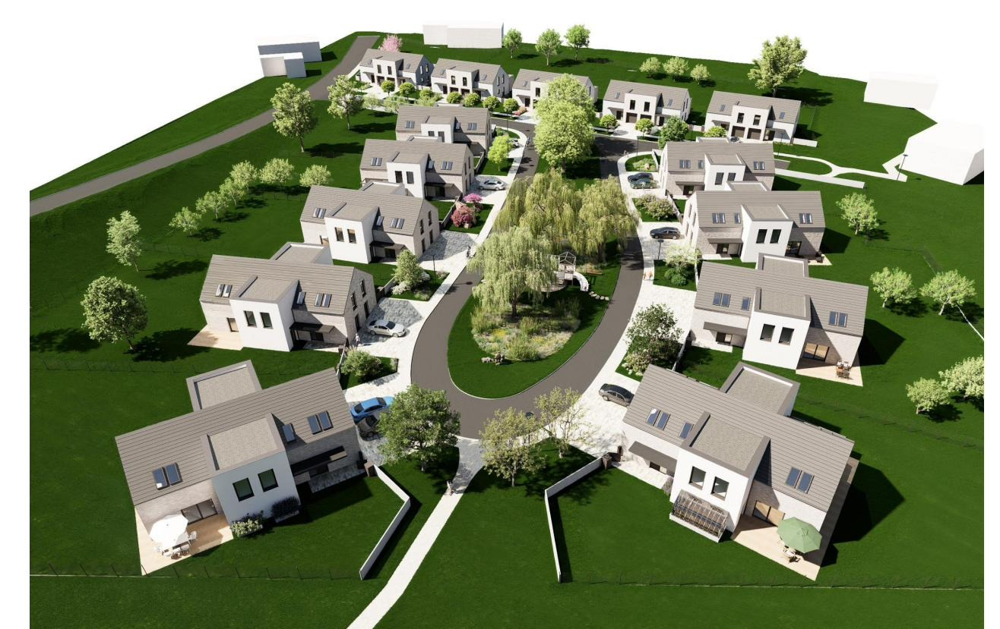
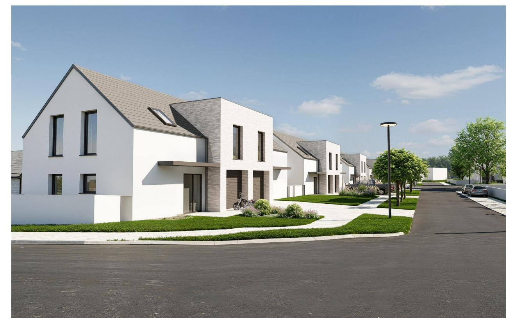
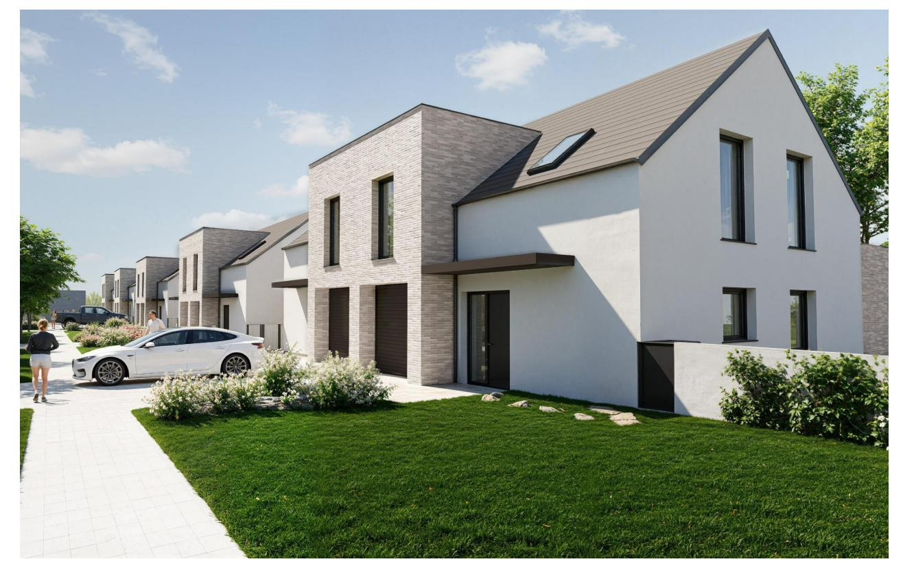
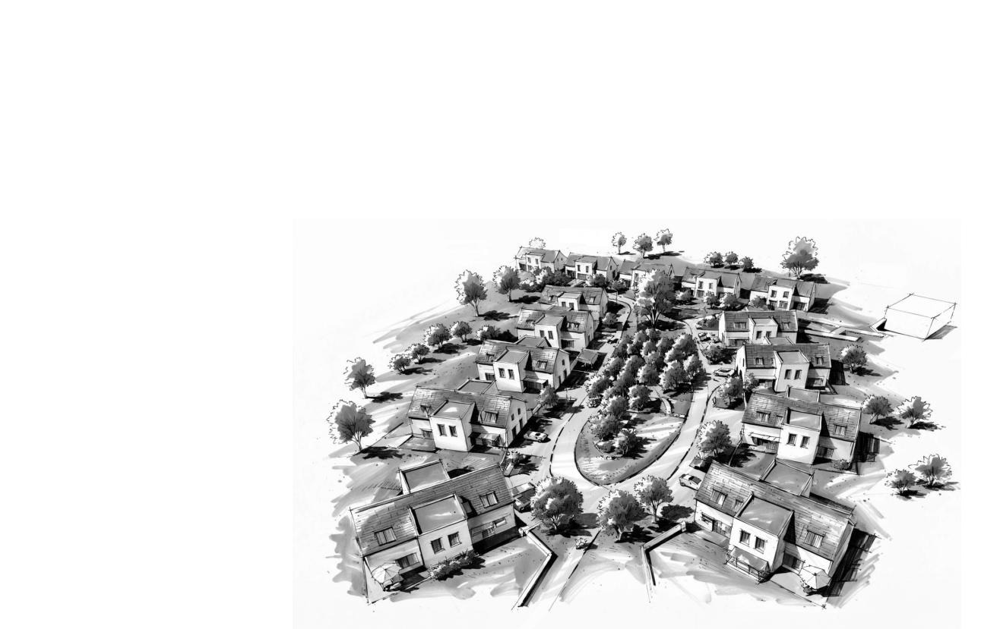
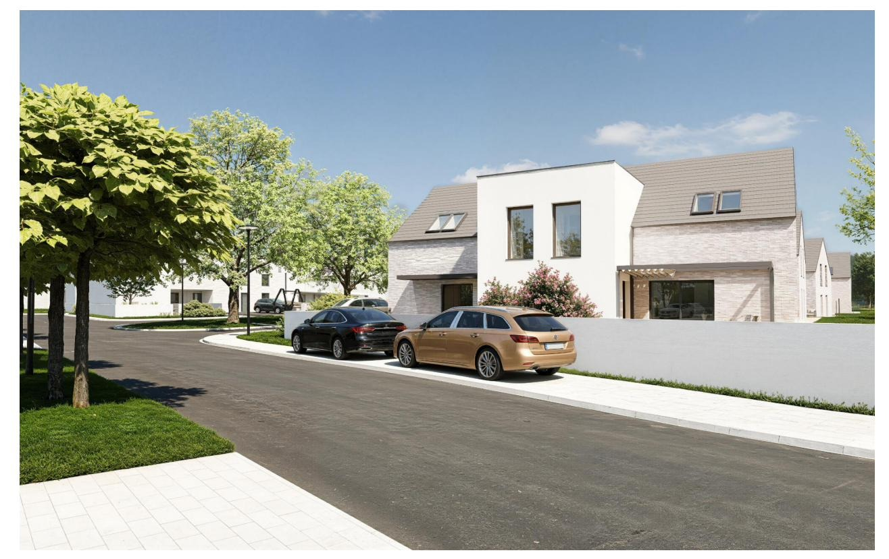
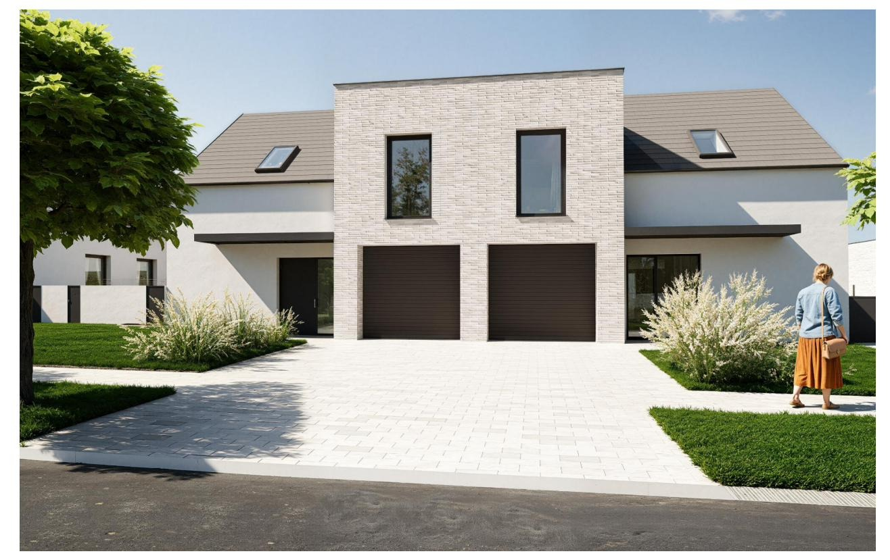
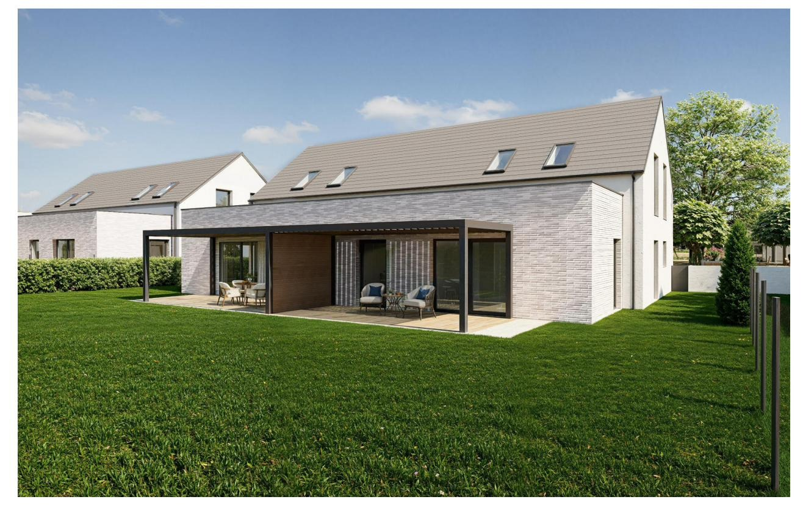
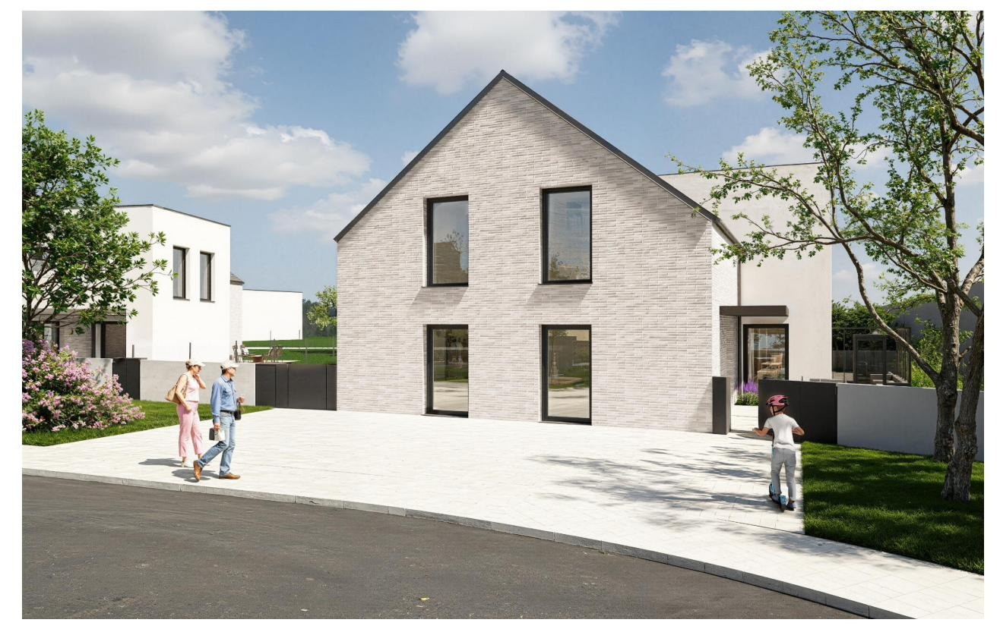
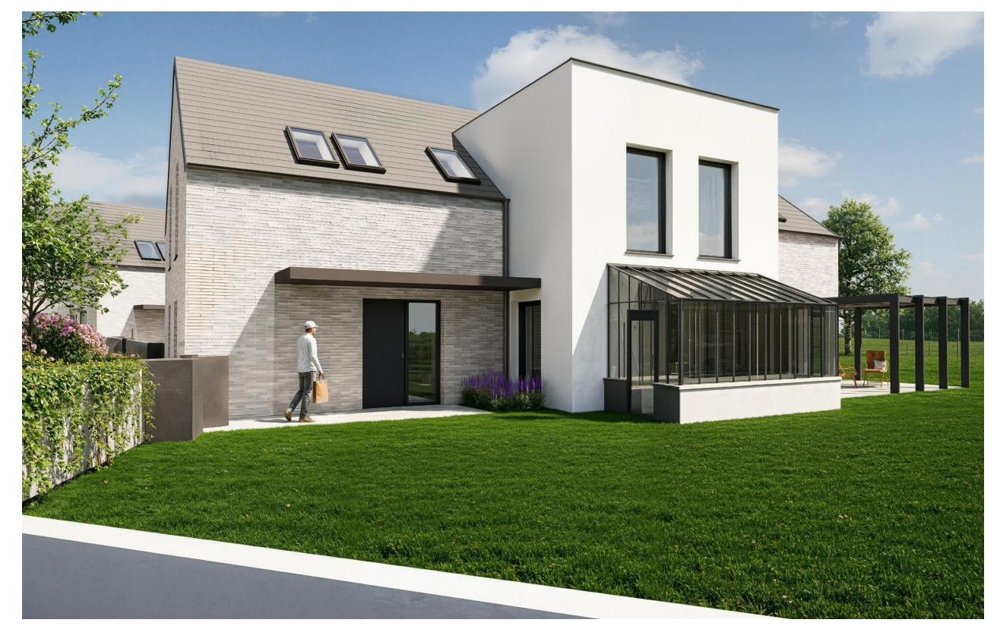
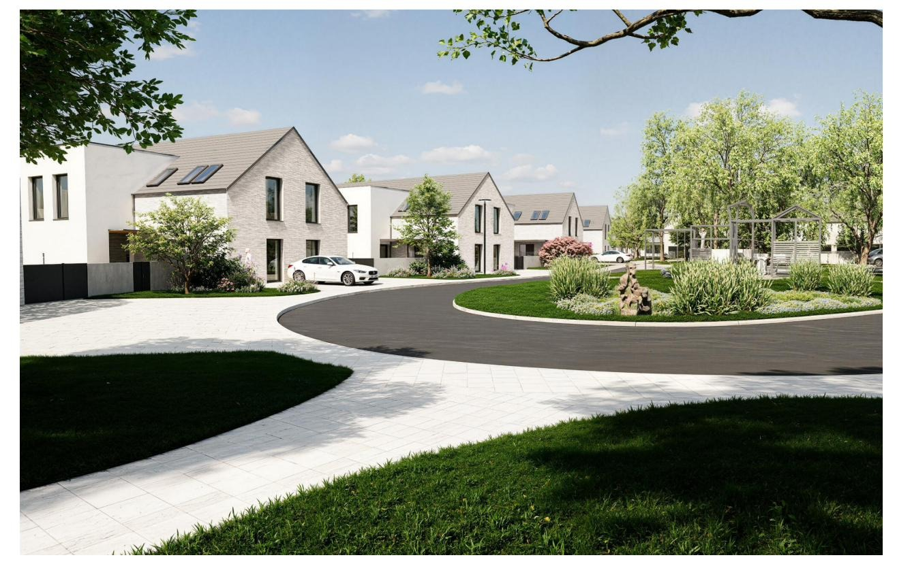

Připravený rezidenční projekt rodinných domů nedaleko Kolína s vlakovým i silničním spojením na Prahu. Prodáváme jako ucelený developerský celek — s vydaným stavebním povolením, provedenou přeložkou vedení vysokého napětí a vybudovanou trafostanicí. Vše je součástí ceny.
Nová náves je citlivě navržený soubor rodinných domů uspořádaných kolem centrálního parkového prostoru — moderní interpretace tradiční české návsi. Architektura sází na střídmé sedlové střechy, přírodní materiály a lidské měřítko, které zapadá do okolní zástavby obce.
Projekt prodáváme jako celek ve stavu připraveném k výstavbě. Kupující přebírá pozemek s vydaným stavebním povolením, provedenou přeložkou vedení vysokého napětí a vybudovanou trafostanicí — vše je součástí kupní ceny. Přebírá tak projekt bez zásadních povolovacích a technických rizik, připravený k výstavbě či rozprodeji jednotlivých parcel.


Starý Kolín leží ve Středočeském kraji nedaleko Kolína a nabízí na svou velikost plnou občanskou vybavenost. Dostupnost kombinuje vlak, autobus i auto — železniční zastávku na hlavním koridoru, autobusové linky na Kolín a Kutnou Horu a silniční napojení na I/38 a dálnici D11 (Praha–Hradec Králové).
Okraj obce, navazuje na stávající zástavbu a komunikaci.
Vlak, autobus i auto — zastávka na koridoru, linky 707 a 803, napojení na I/38 a D11.
Základní i mateřská škola, pošta, lékař a zubař, obchod s potravinami, knihovna.
Tenisové kurty, sokolovna, restaurace a otevřená krajina Polabí.
Projekt předáváme kompletně připravený k výstavbě. Nejnáročnější povolovací i infrastrukturní kroky odbavíme my — a jsou součástí kupní ceny.
Scelený pozemek, architektonická a hmotová studie.
HotovoVydané ÚR na domy, sítě a komunikace vč. dělení pozemků.
HotovoProjekt předáváme s vydaným stavebním povolením — předpoklad do konce roku 2026.
V ceně · do 12/2026Přeložka vedení VN a nová trafostanice — realizace do dubna 2027. Již uhrazeno, smlouva s ČEZ podepsána.
V ceně · do 04/2027Všech 28 rodinných domů je řešeno jako dvojdomy ve dvou velikostních variantách — větší typ A a menší typ B. Ceny jsou uvedeny ve variantě před zdražením (cena domu včetně pozemku).
| Typ | Provedení | Počet | Podlahová plocha | Cena domu | Cena vč. pozemku |
|---|---|---|---|---|---|
| Typ A | Dvojdům — větší | 10 | 159,57 m² | 9 255 060 Kč | 11,02–11,87 mil. Kč |
| Typ B | Dvojdům — menší | 18 | 144,1 m² | 8 357 800 Kč | 9,84–11,05 mil. Kč |
| Celkem | — | 28 | 4 190 m² | — | 299,25 mil. Kč |
Ceny „před zdražením" dle platného ceníku.
Územní rozhodnutí řeší i dělení pozemku na jednotlivé stavební parcely, komunikaci a technickou infrastrukturu. Kupující tak přebírá jasně definovaný a projednaný urbanistický koncept.

Projekt nabízíme k prodeji jako celek. Kupující přebírá připravený projekt s prokazatelným objemem prodeje a prostorem pro developerskou marži. Kompletní finanční model je součástí datového roomu.
| Položka | Hodnota | Poznámka |
|---|---|---|
| Objem prodeje (GDV) vč. DPH | 299 253 500 Kč | 28 RD vč. pozemků · ceník před zdražením |
| Čisté tržby bez DPH | 263 454 184 Kč | Domy 12 %, pozemky 21 % |
| Připraveno v ceně | SP · VN · trafo | Stavební povolení, přeložka VN, trafostanice |
| Zbývá k realizaci | sítě · komunikace · domy | Prostor pro developerskou marži kupujícího |
| Kompletní finanční model | datový room | Rozvaha, cashflow, harmonogram — po NDA |
Stavební parcela s vydaným SP — kupující si staví dům podle sebe. Za tuto volnost platí prémii, proto má samotná parcela vyšší cenu za m² než pozemek s pevně daným domem.






Rádi vám poskytneme kompletní datový room — projektovou dokumentaci, územní rozhodnutí, finanční model a podklady k pozemku. Detailní informace zpřístupníme po podpisu NDA.
RK Kotek — zprostředkování prodeje. Uvedené vizualizace jsou ilustrativní a vycházejí z architektonické studie; skutečné provedení se může lišit. Investiční a kapacitní údaje jsou orientační, nejsou závazným příslibem a budou upřesněny v datovém roomu. Tento web není veřejnou nabídkou ve smyslu občanského zákoníku.